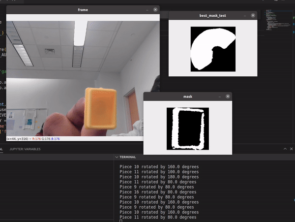

Software and Firmware
Click Here to view our source codeFirmware
In our system we use two Arduinos to control the two big components of our gantry: the H-Bot and the Gripper.
H-Bot Gantry Control
Stepper Motor Control
The H-Bot system has 9 different directions that we have to control, but to allow for different accelerations, specifically half the acceleration, we have 13 different cases.
- a - Stopped
- b - Forward
- c - Backward
- d - Forward Left Diagonal
- e - Forward Right Diagonal
- f - Backward Left Diagonal
- g - Backward Right Diagonal
- h - Left
- i - Right
- j - Slow Forward
- k - Slow Backwards
- l - Slow Left
- m - Slow Right
In order to set one of these states, there needs to be a serial input that specifies the case and number of steps. For example, typing 'b100' sets the state to b or forward and runs it for 100 steps. Once the command is finished, the Arduino prints 'finished' to Serial letting the Python Controller know the instruction is finished.
Gripper and Z Controller
The Gripper and Z axis control are very similar to the H-Bot controller, but is on a separate arduino and only has 5 states. Unlike previously, only states b and c need to have a specified number of steps.
- a - Stopped
- b - Up
- c - Down
- d - Open Gripper
- e - Close Gripper
This entire implementation creates a flexible controller that enables many applications. In this specific use case, it allows us to specify movement of objects to specific locations to organize them by simply sending a commands through serial. However, this controller would allow for other applications, such as playing chess, drawing on paper or any other not rotational xyz movement.
Software
Computer Vision
Expo Marker CV
For our Expo Marker detection, we used the OpenCV’s Python library to mask various Expo Marker colors in the frame of the camera.
To create a binary image of these selected colors, we first needed to choose a colorspace. We used a HSV (hue, saturate, value) colorspace for our color detection. We chose to use this colorspace rather than RGB because HSV is much easier to manipulate colormask-wise. Because color detection is dependent on the camera’s lighting environment, each time we tested our system, we needed to change the HSV bounds for each color. Previously we would have to manually change these values, which proved to be tedious and time-consuming. To expedite this process, we created a control window that would allow us to adjust the bounding range for our HSV values via trackbars.

Now that we have a binary image of our specific color, we can draw rectangles around all the white regions. By doing this, we now can obtain the x and y values of the center of all objects of that color in the frame. Because each color has a different HSV range, a binary image for each color has to be made. All the data from each binary image can be stored and then be overlaid over the original image for visualization.

To negate the occurrence of false positives, we implemented a size check to make sure the camera only recognizes the color on the Expo Markers. We set an area range for the rectangle that has been drawn over all the white regions in the frame. If the rectangle’s area was within the range of 5000-5500 pixels, we know that the color belongs to an expo marker. It should also be noted that the gantry system was a controlled environment, so any objects of the same color and size were usually not present.

Controller
Our python controller connects the firmware to the computer vision system. The controller first tells the gantry to sweep the entire desk until it detects something of a specific color.
From there the python controller, centers the camera around the center of the object and moves forwards the amount of steps that it needs to detect the object. Once the beam break sensor is broken the gripper closes around the object and moves it to a specified location. Below is an attempted demo before fully tuning the system
Perfection Game
The secondary CV system we implemented surrounded the game Perfection where different shaped objects have to be placed in a certain location and assembly.
This computer vision also starts with creating a binary image based on the color of the Perfection pieces. Since all the pieces are yellow, which made it simpler than multiple color detection.
The complexity of this application comes when determining the orientation of the game piece. First, images of each Perfection piece were taken and stored in a directory to be compared to the game piece in the live video feed. When a piece is in the frame of the camera and color detection is applied to it, a still image is captured and a contour of the white space of the binary image is calculated. This contour is then compared to each of the game piece reference images. If the game piece is similar in shape to one of the reference images, that shape becomes our prediction. The unclassified game piece’s contour is then rotated and compared to the contour of the predicted reference image. If the contours are similar within a defined threshold, then we know what piece is being detected and its rotation. If the contours are not similar enough, we compare the contour of the Perfection piece to the next closest prediction and repeat the process.
